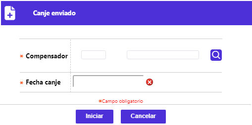
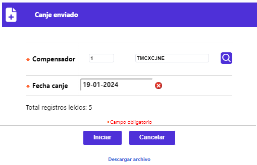
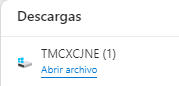
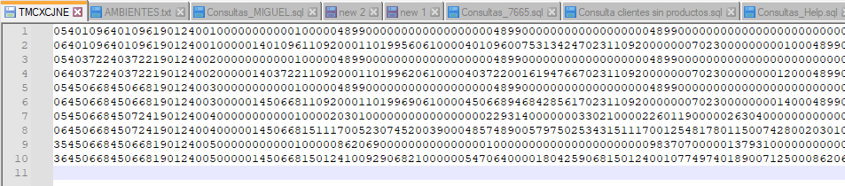

Canje enviado
Mediante esta opción se permite la generación del archivo de canje enviado, que para el caso de la franquicia Credibanco-Visa contiene solo las transacciones locales e internacionales, para las que la entidad desempeña el rol de adquirente (movimiento no propio), mientras que para el caso de la franquicia Master Card procesada (compensada) a través de la Red multicolor, este mismo archivo contiene todo el movimiento generado.

|
Compensador |
Campo que posee lista de valores poblada en la opción Compensadores de la cual se debe seleccionar el compensador hacia el que se dirige el movimiento o canje enviado. |
|
Fecha canje |
Campo de salida, despliega la misma fecha de la aplicación y corresponde a la fecha con la que se reporta el canje enviado. |

El usuario debe activar el enlace Descargar archivo, luego de ello, el navegador mediante una ventana emergente debe notificar que fue descargado:

Mediante un editor de texto, se puede visualizar el contenido del archivo correspondiente:
